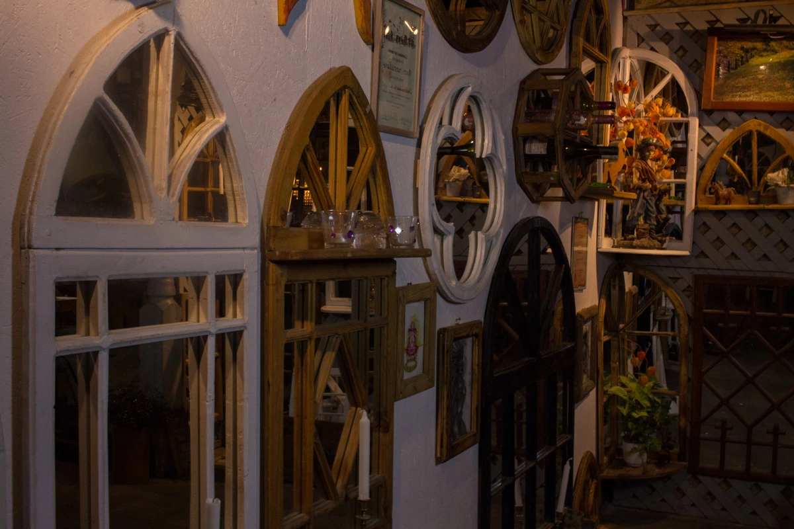
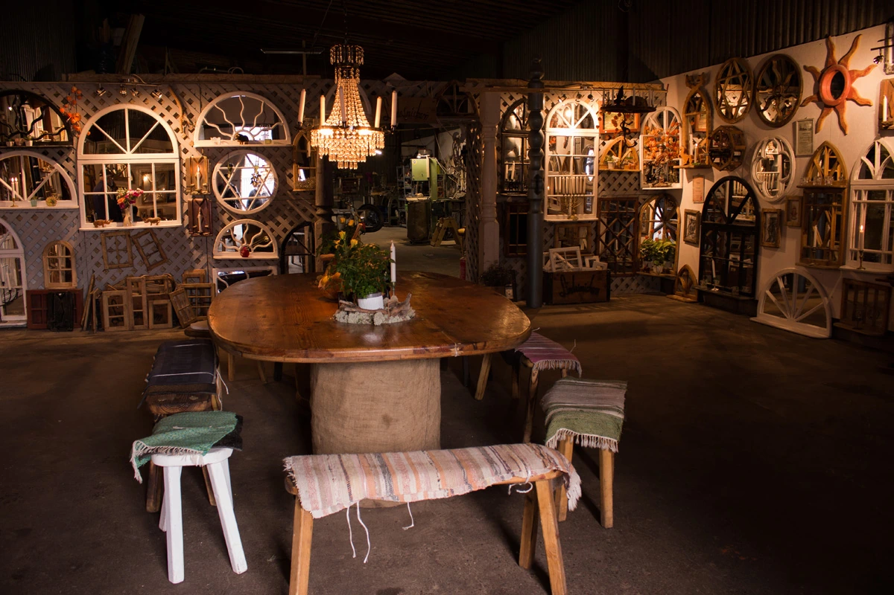
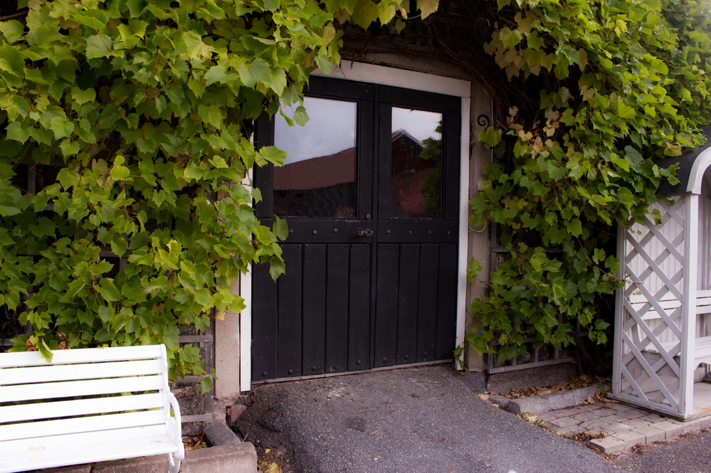
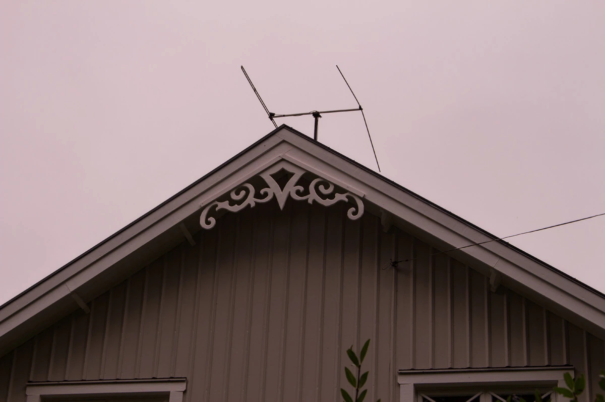
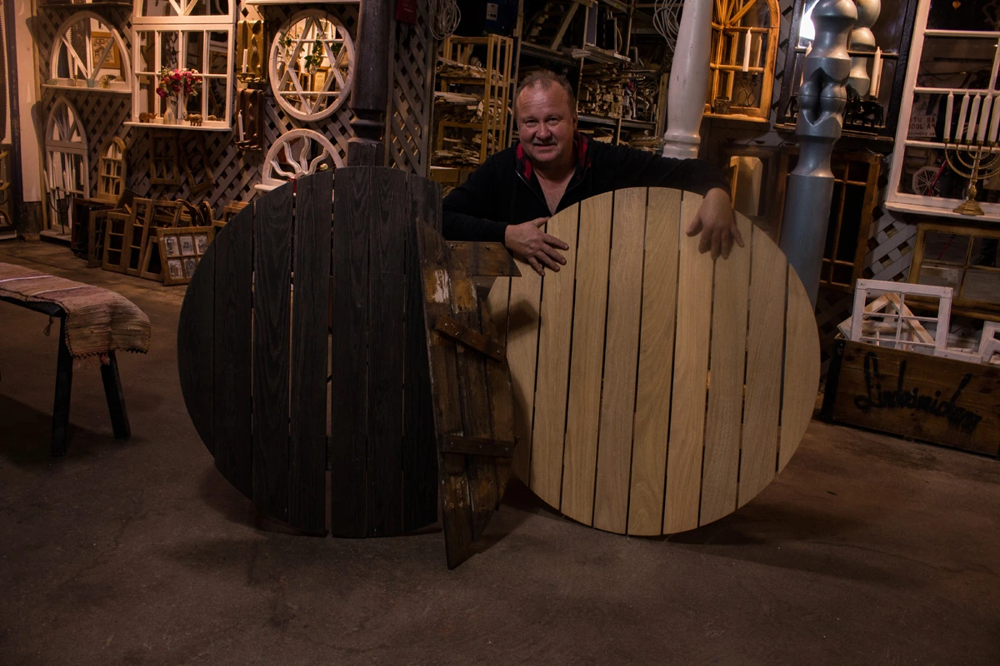
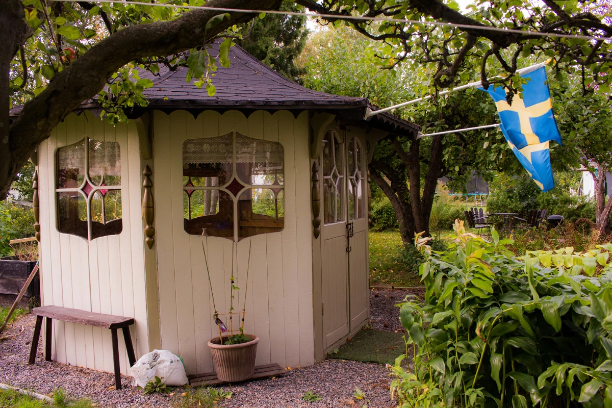

Spegelfönster
Dekorativa speglar med fönsterkänsla. Runda, välvda och spröjsade former som ger rummet djup.
Snickerihjälp för nya idéer och befintliga föremål. Arbeten kan utföras i verkstaden eller på plats hos dig.

Dekorativa speglar med fönsterkänsla. Runda, välvda och spröjsade former som ger rummet djup.

Från bord och skåp till väggfast inredning. Tillverkat eller anpassat efter det du behöver.

Nya snickerier, installation och reparation. Hjälp även när formen eller måtten är ovanliga.

Snickerier som börjar med ett önskemål och byggs för sitt särskilda ändamål.

Ge möbler och äldre snickerier möjlighet att fortsätta användas. Kenneth bedömer vad som går att rädda.

Verandor, farstukvistar och andra byggprojekt där träet står i centrum.
Ett första samtal gör det lättare att se möjligheterna.
Visa gärna en bild, en skiss eller platsen där ditt snickeri ska passa.
Ni går igenom form, funktion och förutsättningar. Be om en offert för arbetet.
Tillverkning, anpassning eller reparation utförs enligt det ni kommer överens om.